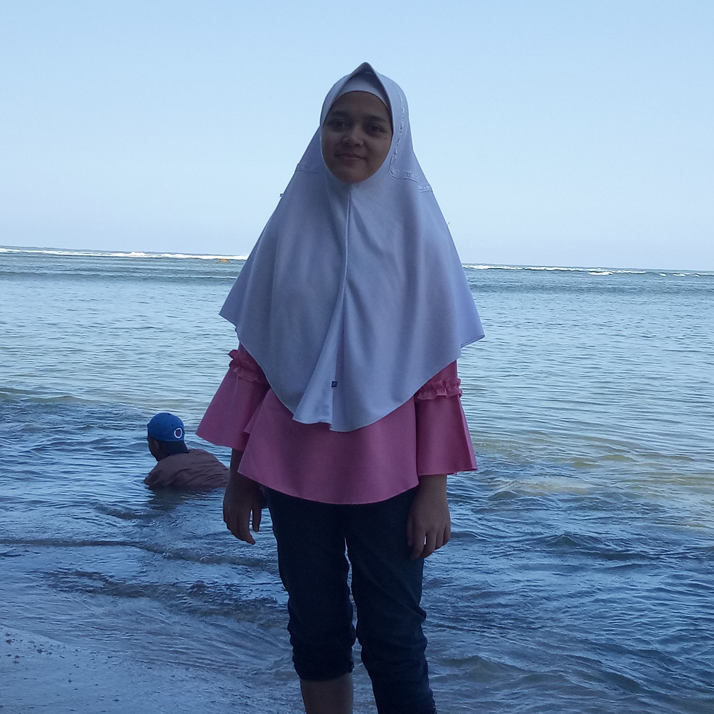
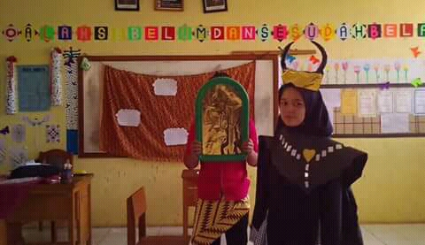
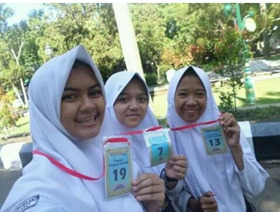

|  |
Kegiatanku Saat Pergi Berlibur Ke Pantai Bersama Keluarga Aku dan keluargaku memutuskan untuk menikmati waktu lbur setelah lebaran ke Pantai. Letaknya tak jauh dari rumahku. sekitar satu jam an. aku sangat gembira. |
|  |
Kegiatanku saat Masih SMP Mengikuti drama berjudul Snow White aku semenjak SMP sudah tertarik dengan dunia peran. Saat itu aku ditunjuk untuk memerankan salah satu karakter antagonis yaitu penihir yang memberi apel merah ke snow white. |
|  |
Kegiatanku saat SMP Mengikuti berbagai perlombaan salah satunya adalah lomba puisi saat itu aku masih menginjak kelas dua SMP. aku dan temanku pergi ke pendopo garut untuk mengikuti lomba bahasa ibu. aku mengikuti cabang lomba baca puisi bahasa sunda. |